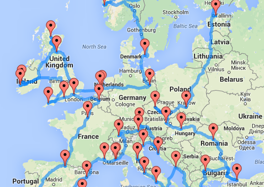
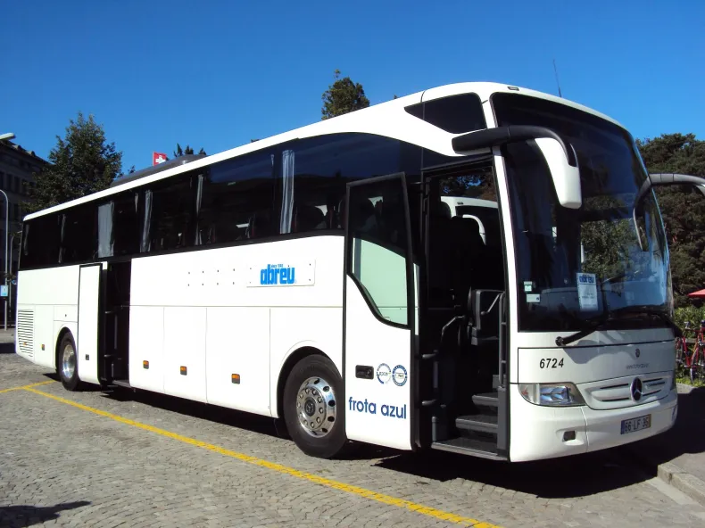
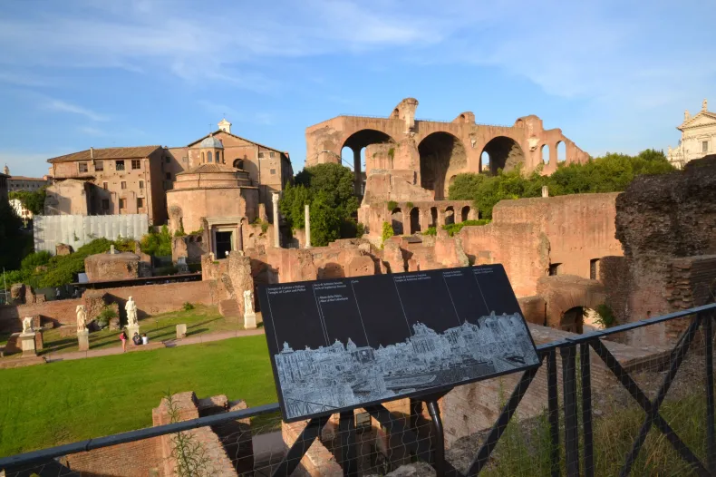
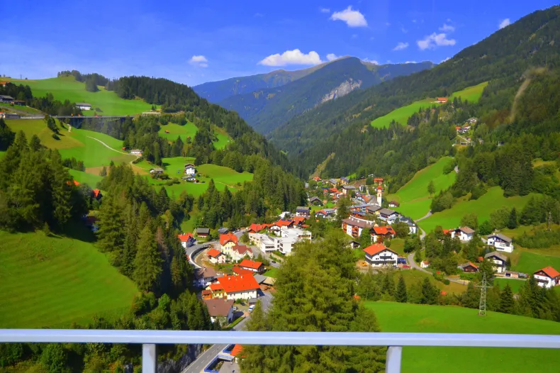

,
Mochilão Eurotrip
Roteiro pela Europa em 20 dias: dicas de turismo na Itália, Vaticano, Áustria, Liechtenstein, Bélgica, Luxemburgo, Suíça, França, Espanha e Portugal

Esse roteiro de viagem pela Europa durante 20 dias foi um divisor de águas na minha vida de viajante. Foi depois dessa imersão cultural que eu despertei completamente e percebi que percorrer todos os lugares possíveis e imagináveis é possível!
Nossa rota de viagem!
Nós fomos de excursão, organizada pela agência Intermezzo Turismo, de Juiz de Fora. Meus pais estavam fazendo aniversário de casamento e me convidaram para ir junto. Eu fiz um planejamento e lá fui eu!

Nosso ônibus de excursão!
A viagem foi inesquecível, nossa guia, a Amália, era uma Portuguesa com especialização em Turismo e História da Europa, então cada cantinho visitado tinha uma explicação super impressionante, enriquecendo absurdamente a experiência.
Penso em um dia escrever um texto específico sobre cada local visitado, com mais detalhes, pois são tantos lugares maravilhosos, mas estou aguardando voltar para fazer isso.
De todos esses lugares lindos, voltei apenas, até agora, a Roma, Veneza, Florença, Innsbruck e Paris, então poderá ter algumas fotos das outras vezes, para tentar deixar o texto mais completo.
Então lá vai:
Roteiro de viagem pela Europa durante 20 dias – Roma, Itália
Começamos por Roma, e a primeira impressão já foi a melhor possível. O dia estava lindo e quente e realmente ela faz jus ao nome de “cidade eterna”.

Forum Romano
E aqui fizemos tudo a pé. Nosso hotel era bem próximo do Coliseu, numa localização perfeita. Então a dica que eu dou é andar, andar, andar. A cidade é um museu a céu aberto. Em qualquer lugar que você olha tem alguma coisa de 2500 anos. Sem contar que vira e mexe os arqueólogos descobrem algo de grande valor arquitetônico e histórico enterrado por aqui.
Roteiro de viagem pela Europa durante 20 dias – De Veneza (Mestre), passando por Cortina D’Ampezzo (Itália) para Innsbruck (Áustria)
Eu acho essa região uma das mais bonitas da Europa. Atravessamos as Dolomitas, que são uma cadeia montanhosa dos Alpes no norte da Itália. Então nessa área passamos por Cortina d’Ampezzo (estação de esqui ainda localizada no Vêneto, no município de Belluno), e pelas comunas de Dobbiaco e Brunico, ( ambas já na região de Trentino-Alto Ádige, província de Bolzano). Como um céu azul deixa a viagem mais animada!
